Chapter 10
AI 工程架构与用户反馈
AI Engineering Architecture and User Feedback
把技术组合成成功产品
Introduction
到目前为止，本书已经介绍了大量让基础模型适应具体应用的技术。本章讨论怎样把它们组合起来，构建成功产品。
AI 工程技术和工具种类繁多，选择合适方案可能令人无所适从。为简化这一过程，本章采用渐进方式：从最简单的基础模型应用架构开始，指出其中问题，再逐步添加组件解决。
我们可以花无限时间推理怎样构建成功应用，但判断应用是否真正达成目标的唯一办法，是把它交给用户。用户反馈一直是指导产品开发的宝贵资源；对 AI 应用，它更是改进模型的重要数据源。
对话界面让用户更容易给出反馈，却让开发者更难提取信号。本章会讨论不同类型的对话式 AI 反馈，以及怎样设计系统，在不损害用户体验的情况下收集正确反馈。
AI 工程架构
AI Engineering Architecture
完整 AI 架构可能非常复杂。本节模拟团队在生产环境中的实际演进，从最简单架构开始，逐步加入更多组件。AI 应用虽然多种多样，却共享许多组件。这里提出的架构已经在多家公司验证，适用于广泛应用；不过具体应用仍可能有所偏离。
最简单形式中，应用接收查询并发送给模型，模型生成回答，再返回给用户，如图 10-1。没有上下文增强、没有护栏、没有优化。“模型 API”既指 OpenAI、Google、Anthropic 等第三方 API，也指自托管模型；第 9 章讨论怎样为自托管模型构建推理服务器。
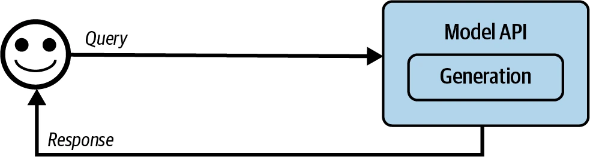
从这个简单架构出发，可以按需要添加组件，过程可能如下：
- 让模型访问外部数据源和信息收集工具，增强输入模型的上下文；
- 设置护栏，保护系统和用户；
- 添加模型路由器和网关，支持复杂流水线并提高安全性；
- 利用缓存优化延迟和成本；
- 加入复杂逻辑和写入动作，最大化系统能力。
本章采用的是作者在生产环境中经常看到的演进顺序，但每个人需求不同，应遵循最适合自己应用的顺序。
监控与可观测性是任何应用进行质量控制和表现改进都不可缺少的部分，将在这套流程末尾讨论；把所有组件串起来的编排则随后介绍。
步骤 1：增强上下文
Step 1. Enhance Context
平台最初扩展时，通常会添加机制，为系统构建模型回答每条查询所需的相关上下文。第 6 章介绍了文本、图像、表格数据等多种检索机制；也可以用工具增强上下文，让模型通过网页搜索、新闻、天气、活动等 API 自动收集信息。
上下文构建之于基础模型，就像特征工程之于传统模型：为模型生成输出提供必要信息。由于它在系统输出质量中处于核心地位，几乎所有模型 API 提供商都支持上下文构建。例如 OpenAI、Claude 和 Gemini 都允许用户上传文件，也允许模型使用工具。
不过，正如模型能力不同，提供商支持上下文构建的程度也不同。例如它们可能限制能上传的文档类型和数量。专用 RAG 方案也许允许上传任意多文档，只受向量数据库容量限制；通用模型 API 却可能只允许少量文档。
不同框架的检索算法、块大小等配置也不同。工具方面，各方案支持的工具类型和执行模式同样有差异，例如是否支持并行函数执行或长时间任务。
加入上下文构建后，架构如图 10-2。
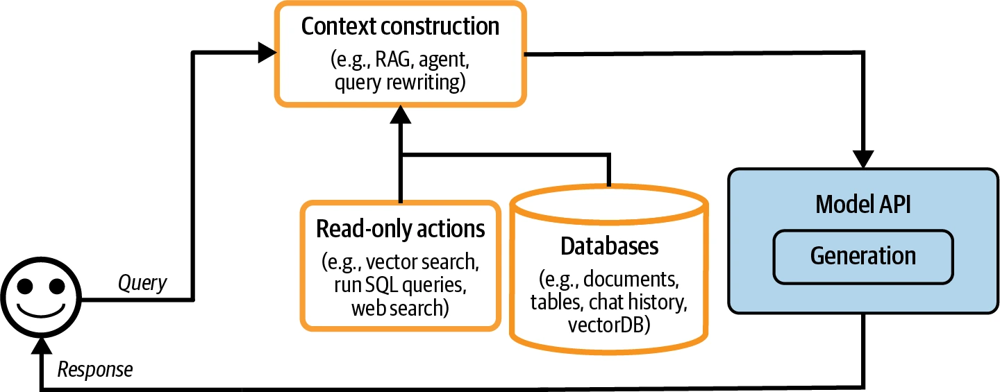
步骤 2：设置护栏
Step 2. Put in Guardrails
护栏有助于缓解风险，保护你和用户。任何暴露于风险的位置都应该设置护栏。总体可以分为输入护栏和输出护栏。
输入护栏
Input Guardrails
输入护栏通常防范两类风险：把私密信息泄露给外部 API，以及执行会攻破系统的恶意提示。第 5 章介绍攻击者利用提示攻击应用的多种方式及防御方法。风险可以缓解，却永远无法完全消除，因为模型生成回答的内在性质和不可避免的人为失误始终存在。
向外部 API 泄露私密信息，是使用第三方模型 API、必须把数据发送到组织外部时特有的风险。可能原因包括：
- 员工把公司机密或用户私密信息复制到提示中，发送给第三方 API；
- 应用开发者把公司内部政策和数据放进系统提示；
- 工具从内部数据库取回私密信息，并把它加入上下文。
使用第三方 API 时，没有滴水不漏的方法彻底消除潜在泄露，但可以用护栏缓解。很多现成工具能自动检测敏感数据，具体检测哪些类别由你指定。常见类别包括：
- 个人信息，如证件号码、电话号码、银行账户；
- 人脸；
- 与公司知识产权或特权信息相关的特定关键词、短语。
许多敏感数据检测工具使用 AI 识别潜在敏感信息，例如判断字符串是否像有效家庭住址。发现查询含敏感信息后有两种选择：阻止整个查询，或从中移除敏感信息。
例如把用户电话号码替换为占位符 [PHONE NUMBER]。若生成回答含这个占位符，就用 PII 反向字典把占位符映射回原始信息，从而恢复内容，如图 10-3。
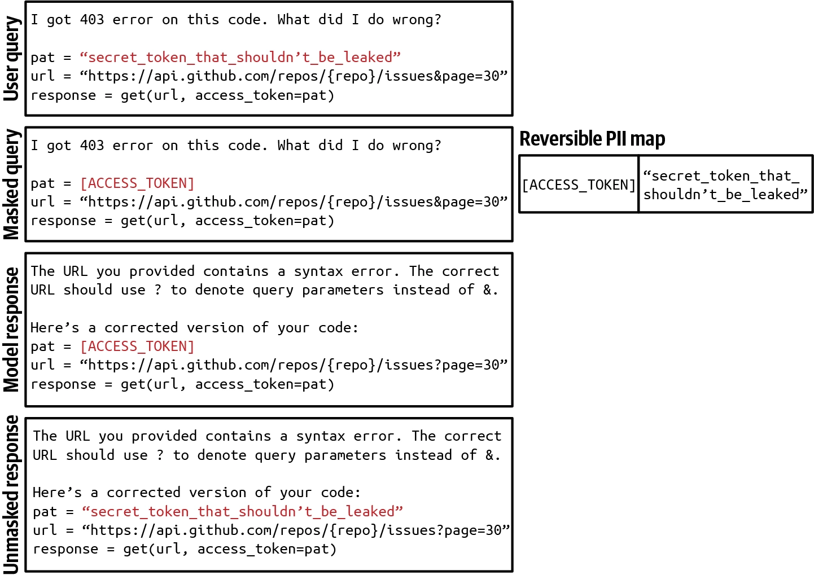
输出护栏
Output Guardrails
模型可能以很多方式失败，输出护栏有两个主要功能：
- 发现输出失败；
- 规定处理不同失败模式的政策。
要发现不符合标准的输出，必须先理解失败长什么样。最容易发现的是模型在不该为空时返回空回答。不同应用的失败不同，下面按质量和安全两类列出常见失败；第 4 章讨论质量，第 5 章讨论安全，此处快速回顾。
- 质量
-
- 回答格式错误，不遵守预期输出格式。例如应用期待 JSON，模型却生成无效 JSON；
- 模型产生幻觉，回答与事实不一致；
- 回答总体很差。例如让模型写文章，文章就是写得不好。
- 安全
-
- 含种族主义、色情内容或非法活动的有害回答；
- 含私密、敏感信息的回答；
- 会触发远程工具或代码执行的回答；
- 错误描述你的公司或竞争对手、带来品牌风险的回答。
第 5 章说过，安全测量不仅要追踪安全失败，也要追踪错误拒绝率。系统可能“过于安全”，把合法请求也拦截，打断用户工作并引发挫败。
很多失败可以用简单重试逻辑缓解。AI 模型具有概率性，同一查询重试可能得到不同回答。例如回答为空，就重试 X 次，或直到得到非空回答；格式错误，则重试到格式正确为止。
但重试会增加延迟和成本，每次都意味着新一轮 API 调用。失败发生后再重试，用户感知延迟会翻倍。为降低延迟，可以并行调用：不要等第一次失败，而是同时把查询发送两次，得到两个回答后选较好的一个。这样冗余调用增多，但延迟仍可控制。
困难请求也经常回退给人类。例如把含特定短语的查询转交人工。有些团队用专门模型决定何时转人工：某团队在情感分析检测到用户消息中的愤怒时转人工；另一个团队在对话达到一定轮数后转人工，避免用户困在循环里。
护栏实现
Guardrail Implementation
护栏存在取舍，其中之一是可靠性与延迟。某些团队承认护栏重要，却认为延迟更重要，于是没有实现护栏，因为它会显著增加应用延迟。
输出护栏在流式补全模式下可能效果不好。默认模式会完整生成回答后再展示，可能耗时很久；流式模式边生成边把新词元发送给用户，减少看到回答前的等待。缺点是很难评估局部回答，系统护栏尚未判断应拦截前，不安全内容就可能已经传给用户。
需要多少护栏，还取决于模型是自托管还是使用第三方 API。两者上层都能实现护栏；第三方 API 通常开箱提供大量护栏，可以减少自己实现的数量。另一方面，自托管无需把请求发送到外部，也就减少了多类输入护栏需求。
应用可能在许多位置失败，因此护栏可以在多个层面实现。模型提供商为模型添加护栏，提高质量与安全；但必须平衡安全与灵活性：限制使模型更安全，也可能让它不适合某些具体用例。
应用开发者同样能实现护栏，“提示攻击防御”介绍了许多技术。可直接使用的方案包括 Meta Purple Llama、NVIDIA NeMo Guardrails、Azure PyRIT、Azure AI 内容过滤器、Perspective API 和 OpenAI 内容审核 API。输入、输出风险有重叠，所以护栏方案通常同时保护两端。下一节还会看到，一些模型网关也提供护栏功能。
加入护栏后，架构如图 10-4。作者把评分器放在模型 API 下方，因为评分器经常由 AI 驱动，尽管一般比生成模型更小、更快；评分器也可以放在输出护栏框中。
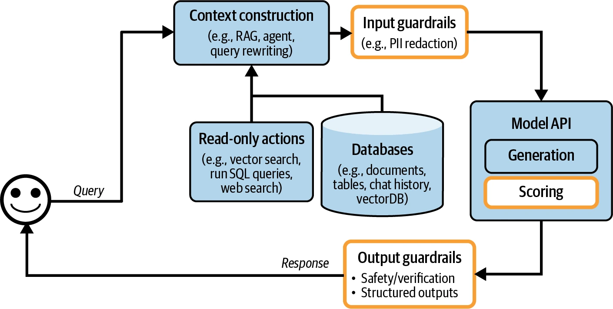
步骤 3：添加模型路由器和网关
Step 3. Add Model Router and Gateway
随着应用使用越来越多模型，路由器和网关会帮助管理服务多个模型的复杂度与成本。
路由器
Router
不必让一个模型处理所有查询，可以为不同查询类型使用不同方案。好处有几项。第一，可以采用专用模型，它在特定查询上可能胜过通用模型，例如一个专攻技术排障，另一个专攻账单。第二，可以节省成本：无需所有查询都用昂贵模型，简单查询可路由到便宜模型。
路由器通常包含一个意图分类器，预测用户想做什么，再根据意图把查询路由到合适方案。以客服聊天机器人为例：
- 用户要重置密码，路由到密码恢复 FAQ；
- 请求纠正账单错误，路由给人工操作员；
- 请求排查技术问题，路由给专门排障的聊天机器人。
意图分类器还能阻止系统参与范围外对话。若查询不合适，聊天机器人可用固定回答礼貌拒绝，无需浪费 API 调用。例如用户问下次选举你会投谁，它可以说：“作为聊天机器人，我没有投票能力。如果你有产品问题，我很乐意帮忙。”
意图分类器也能发现模糊查询并要求澄清。例如收到“Freezing”，系统可以问：“你是想冻结账户，还是在说天气很冷？”或者简单问：“抱歉，可以详细说明吗？”
其他路由器可以帮助模型决定下一步。能执行多种动作的智能体，可用“下一动作预测器”决定接下来调用代码解释器还是搜索 API。带记忆系统的模型，可用路由器预测应从记忆层级的哪部分取信息。
假设用户在当前对话附加一份提到 Melbourne 的文档，稍后问“墨尔本最可爱的动物是什么？”模型需要决定依赖附件信息，还是为这条查询搜索互联网。
意图分类器和下一动作预测器都可以建立在基础模型之上。许多团队把 GPT-2、BERT、Llama 7B 等较小语言模型适配成意图分类器，也有团队从头训练更小分类器。路由器应该快速、便宜，这样同时使用多个也不会显著增加延迟和成本。
路由到上下文限制不同的模型时，查询上下文可能要相应调整。考虑一条 1,000 词元查询，原计划交给 4K 上下文模型；系统之后执行网页搜索，又返回 8,000 词元上下文。此时可以截断上下文以适配原模型，也可以把查询改路由到上下文更大的模型。
路由通常由模型完成，因此图 10-5 中位于“模型 API”框内。路由器与评分器一样，一般小于生成模型。
把路由器与其他模型放在一起更容易管理，但要注意，路由经常发生在检索之前。例如先由路由器判断查询是否在范围内，如果在，再判断是否需要检索。路由也能发生在检索之后，例如决定是否转人工；不过“路由—检索—生成—评分”是更常见的 AI 应用模式。
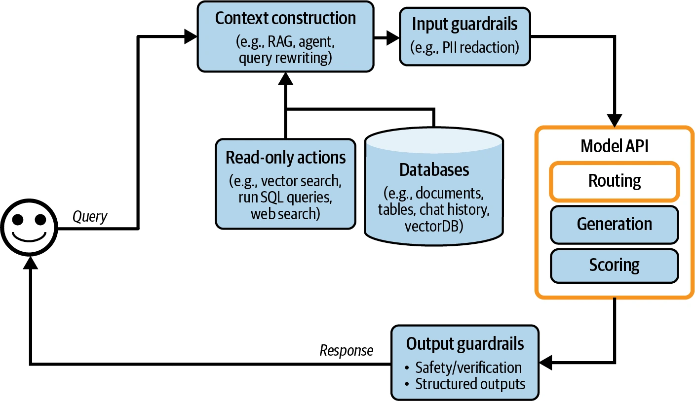
网关
Gateway
模型网关是中间层，让组织以统一、安全方式与不同模型交互。最基本功能是为自托管模型和商业 API 后的模型提供统一接口。
网关让代码更容易维护：某个模型 API 改变时，只需更新网关，不必修改所有依赖该 API 的应用。图 10-6 是高层示意。
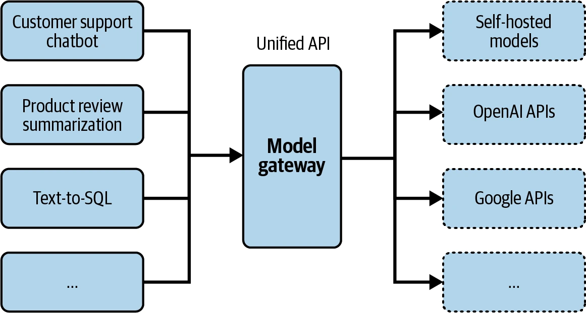
最简单的模型网关就是统一包装器。下面代码展示可能的实现思路；它没有错误检查和优化，并不打算直接运行：
import os
import google.generativeai as genai
import openai
def openai_model(input_data, model_name, max_tokens):
openai.api_key = os.environ["OPENAI_API_KEY"]
response = openai.Completion.create(
engine=model_name,
prompt=input_data,
max_tokens=max_tokens
)
return {"response": response.choices[0].text}
def gemini_model(input_data, model_name, max_tokens):
genai.configure(api_key=os.environ["GOOGLE_API_KEY"])
model = genai.GenerativeModel(model_name=model_name)
response = model.generate_content(input_data)
return {"response": response["choices"][0]["message"]}
@app.route("/model", methods=["POST"])
def model_gateway():
data = request.get_json()
model_type = data.get("model_type")
model_name = data.get("model_name")
input_data = data.get("input_data")
max_tokens = data.get("max_tokens")
if model_type == "openai":
result = openai_model(input_data, model_name, max_tokens)
elif model_type == "gemini":
result = gemini_model(input_data, model_name, max_tokens)
return jsonify(result)模型网关提供访问控制和成本管理。与其把组织的 OpenAI API token 交给所有需要访问的人——很容易泄露——不如只开放模型网关，建立集中、受控的访问点。网关还能实现细粒度权限，规定哪个用户或应用能访问哪个模型；并监控、限制 API 调用，防止滥用并有效管理成本。
网关也能实现回退策略，克服限流或 API 故障——后者不幸地很常见。主 API 不可用时，网关可以把请求路由到替代模型，等待片刻后重试，或用其他方式优雅处理失败，确保应用不中断地平稳运行。
请求和回答本来就经过网关，因此这里也适合实现负载均衡、日志和分析等功能。有些网关甚至提供缓存与护栏。
网关相对容易实现，所以现成方案很多，包括 Portkey AI Gateway、MLflow AI Gateway、Wealthsimple LLM Gateway、TrueFoundry、Kong 和 Cloudflare。
在我们的架构中，网关现在取代模型 API 框，如图 10-7。
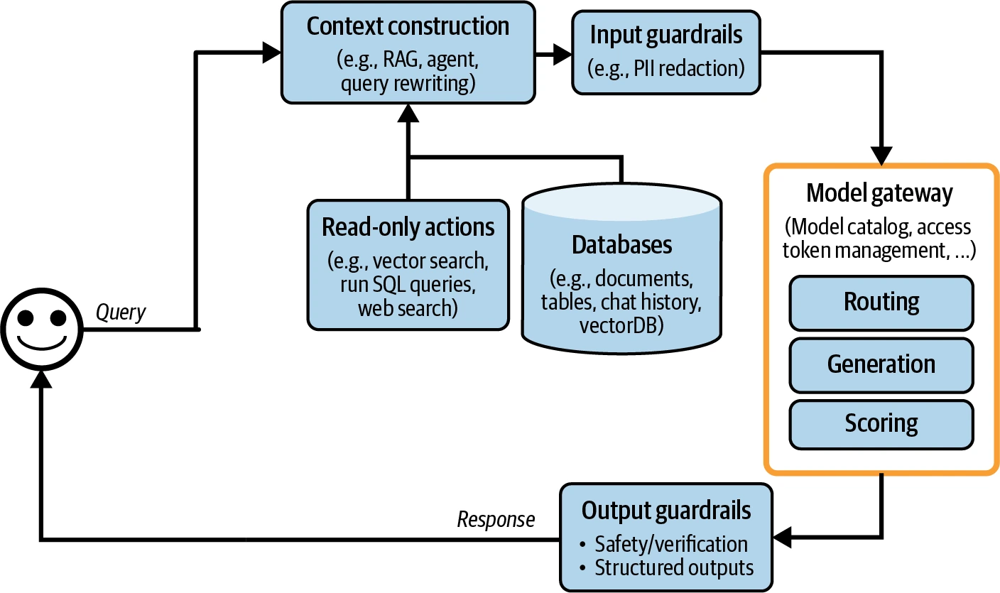
类似的抽象层——例如工具网关——也有助于访问广泛工具。本书没有展开，因为截至写作时它尚未成为常见模式。
步骤 4：用缓存降低延迟
Step 4. Reduce Latency with Caches
缓存长期以来一直是软件应用降低延迟和成本的核心，许多软件缓存思想都能用于 AI。第 9 章介绍 KV 缓存、提示缓存等推理缓存技术；本节聚焦系统缓存。缓存技术历史悠久、文献丰富，这里只介绍轮廓。系统缓存主要有两种：精确缓存和语义缓存。
精确缓存
Exact Caching
精确缓存只有在请求完全相同项目时才使用缓存。例如用户要求模型概括一个商品，系统先查缓存是否已有这个确切商品的摘要；有就取回，没有就生成并缓存。
嵌入检索也用精确缓存避免重复向量搜索。新查询若已在向量搜索缓存中，就返回缓存结果；否则执行向量搜索并缓存。
涉及多个步骤——如思维链——或耗时动作——如检索、SQL 执行、网页搜索——的查询尤其适合缓存。
精确缓存可以放在内存中，以便快速读取；但内存容量有限，也可采用 PostgreSQL、Redis 或分层存储，在速度与容量间平衡。缓存淘汰策略对控制体积、维持表现至关重要，常见策略有最近最少使用（LRU）、最不常用（LFU）和先进先出（FIFO）。
查询应在缓存中保留多久，取决于它再次被调用的可能性。用户专属查询——如“我最近订单的状态是什么？”——不太可能由其他用户复用，所以不应缓存。天气等时间敏感查询也不适合缓存。许多团队训练分类器，预测查询是否应缓存。
缓存处理不当会泄露数据。假设你为电商网站工作，用户 X 问一个看似通用的问题：“电子产品的退货政策是什么？”由于退货政策取决于会员身份，系统先检索 X 的信息，再生成含 X 信息的回答。系统误以为是通用问题并缓存；后来用户 Y 提同样问题，缓存结果被返回，于是 X 的信息泄露给 Y。
语义缓存
Semantic Caching
与精确缓存不同，只要语义相似，不必完全相同，语义缓存就会复用结果。一个用户问“What’s the capital of Vietnam?”，模型回答“Hanoi”；后来另一用户问“What’s the capital city of Vietnam?”，语义相同、措辞略异。语义缓存可以复用第一个答案，不必从头计算。
复用相似查询能提高缓存命中率、可能降低成本，但语义缓存也可能降低模型表现。
语义缓存只有在能可靠判断两条查询是否相似时才有效。常见方法是第 3 章介绍的语义相似度：
- 用嵌入模型为每条查询生成嵌入；
- 用向量搜索找出与当前查询嵌入相似度最高的缓存嵌入，设分数为 X；
- 若 X 高于阈值，就认为缓存查询相似并返回缓存结果；否则处理当前查询，并把嵌入和结果一起缓存。
这种方法需要向量数据库存储缓存查询的嵌入。
与其他缓存技术相比，语义缓存价值更可疑，因为很多组件都容易失败。成功依赖高质量嵌入、正常工作的向量搜索和可靠相似度指标。正确阈值也很难设，需要大量试错。系统一旦把新查询误判为另一个查询的相似项，返回的缓存回答就会错。
语义缓存还可能耗时、耗算力，因为涉及向量搜索；速度和成本取决于缓存嵌入规模。
如果命中率很高——相当一部分查询都能有效复用缓存结果——语义缓存仍可能值得。但加入其复杂性以前，务必评估效率、成本和表现风险。
加入缓存后，平台如图 10-8。KV 缓存和提示缓存通常由模型 API 提供商实现，因此图中没有显示；若要画出来，可以放在“模型 API”框内。图中新增一条箭头，把生成回答加入缓存。
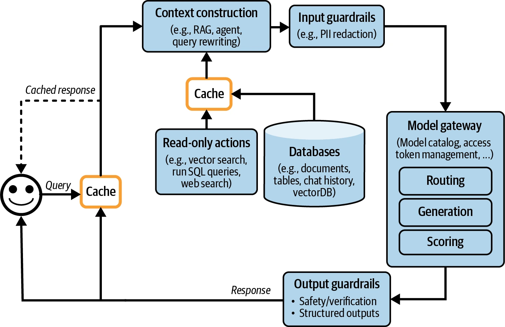
步骤 5：加入智能体模式
Step 5. Add Agent Patterns
到目前为止讨论的应用仍相当简单，每条查询都遵循顺序流程。但第 6 章说过，应用流程可以包含循环、并行执行和条件分支，智能体模式能帮助构建这类复杂应用。
例如系统生成输出后，可能判定任务尚未完成，需要再次检索更多信息。原始回答与新检索上下文会一起传给同一个或另一个模型，形成循环，如图 10-9。
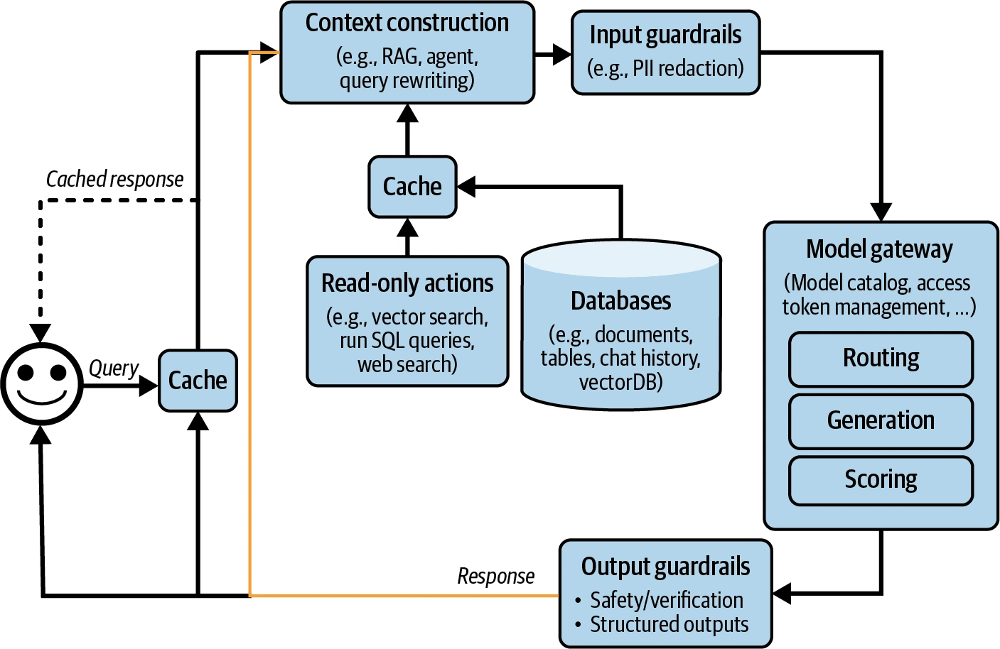
模型输出也可调用写入动作，例如撰写邮件、下订单、发起银行转账。写入动作让系统直接改变环境。第 6 章说过，它们大幅增强系统能力，也显著增加风险。给模型写入权限必须极其谨慎。加入写入动作后，架构如图 10-10。
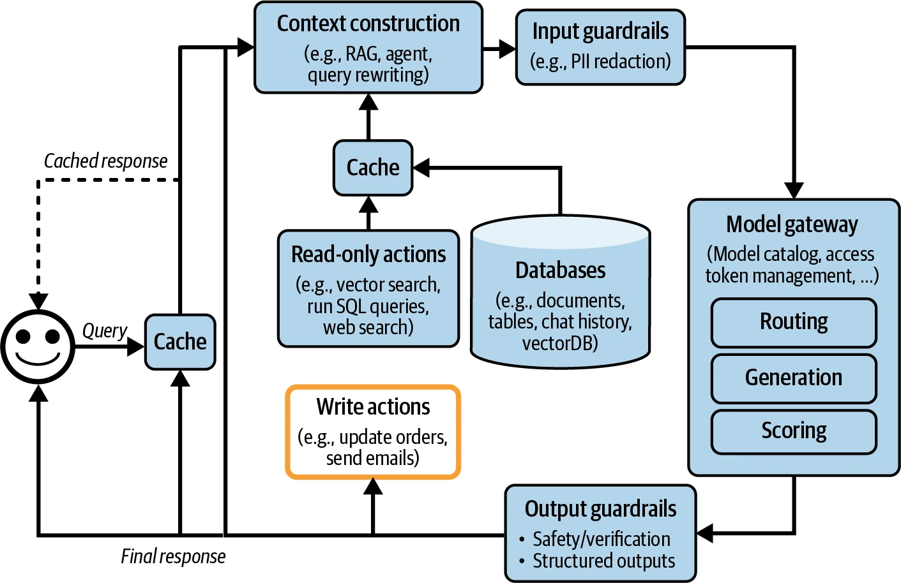
如果一路采用了所有步骤，架构很可能已经相当复杂。复杂系统能解决更多任务，也引入更多失败模式；潜在故障点众多，让调试更加困难。下一节介绍提高系统可观测性的最佳实践。
监控与可观测性
Monitoring and Observability
虽然可观测性单列一节，它应该从一开始就融入产品设计，而不是事后补上。产品越复杂，可观测性越关键。
可观测性是所有软件工程学科的通用实践，已经形成庞大产业，有成熟最佳实践和大量可直接使用的专有、开源方案。为避免重复造轮子，本节聚焦基础模型应用的独特之处；想深入学习，可参考本书 GitHub 仓库资料。
监控与评测目标相同：降低风险，发现机会。监控应帮助缓解应用失败、安全攻击和漂移，也应发现改善应用、节约成本的机会，并通过提高系统表现透明度帮助你承担责任。
DevOps 社区提出三个指标，可评估系统可观测性质量：
- MTTD（mean time to detection，平均发现时间）：坏事发生后多久能发现？
- MTTR（mean time to response，平均响应时间）：发现以后多久能解决？
- CFR（change failure rate，变更失败率）：多少变更或部署会导致必须修复或回滚的失败？如果连 CFR 都不知道，就该重新设计平台，提高可观测性。
CFR 高不一定意味着监控系统差，但应重新思考评测流水线，让糟糕变更在部署前被发现。评测与监控必须紧密配合：评测指标要能很好转化成监控指标，即评测中表现好的模型，监控中也应该好；监控发现的问题则应反馈给评测流水线。
2010 年代中期以来，行业开始用“可观测性”替代“监控”。监控不假设系统内部状态与外部输出之间有什么关系，只观察外部输出，判断内部何时出了问题；但外部输出不保证能说明具体哪里出错。
可观测性做了比传统监控更强的假设：可以从外部输出推断内部状态。可观测系统出问题时，应该仅查看日志和指标就能判断原因，不必给系统发布新代码。可观测性是给系统植入测量能力，确保收集、分析足够的运行时信息，从而在故障发生时帮助定位。
本书用“监控”表示追踪系统信息的动作，用“可观测性”表示为系统植入测量、追踪和调试能力的完整过程。
指标
Metrics
提到监控，多数人先想到指标；但指标本身不是目标。坦率说，除非服务于某个目的，多数公司并不关心应用的输出相关性得分是多少。指标的目的，是告诉你何时出错，并找出改进机会。
列出要追踪的指标以前，先理解想发现哪些失败，再围绕失败设计指标。例如不希望应用产生幻觉，就设计帮助发现幻觉的指标，其中一项可以是“应用输出是否能从上下文推导出来”。不希望应用烧光 API 额度，就追踪输入、输出词元数、缓存成本和命中率等 API 成本指标。
基础模型输出开放，出错方式很多。指标设计需要分析思维、统计知识，往往还需要创造力；应该追踪什么高度依赖应用。
本书已经介绍多类模型质量指标——第 4～6 章以及本章后文——和多种计算方法——第 3、5 章。这里快速回顾。
最容易追踪的是格式失败，因为很容易发现、验证。例如期待 JSON，就追踪模型生成无效 JSON 的频率，并在无效结果中继续统计多少容易修复——缺右括号容易，缺预期键更难。
开放式生成可以监控事实一致性，以及简洁性、创造力、积极性等相关生成质量指标；其中许多可由 AI 评判者计算。
若安全很重要，可以追踪有害性指标，检测输入、输出中的私密敏感信息；追踪护栏触发频率和系统拒答频率；也要检测异常查询，因为它可能揭示有趣边缘案例或提示攻击。
模型质量还能从用户自然语言反馈和对话信号推断。容易追踪的指标包括：
- 用户多常在生成中途停止？
- 每段对话平均轮数是多少？
- 每条输入平均多少词元？用户是否用应用处理更复杂任务，还是逐渐学会把提示写得更简洁？
- 每条输出平均多少词元？某些模型是否比其他模型更啰嗦？某类查询是否更容易产生长答案？
- 模型输出词元分布是什么？随时间怎样变化？模型多样性是增加还是减少？
长度指标对延迟和成本也很重要，因为上下文、回答越长，延迟与成本通常越高。
应用流水线每个组件都有自己的指标。例如 RAG 的检索质量常用上下文相关性、上下文精确率评估；向量数据库可按索引数据所需存储量和查询耗时评估。
指标通常很多，应该测量它们彼此之间、尤其与业务北极星指标的相关性。北极星可以是 DAU（日活用户）、会话时长或订阅数。与北极星高度相关的指标，可能提示怎样改善北极星；完全无关的指标，也可能告诉你不该优化什么。
追踪延迟对理解用户体验至关重要。第 9 章介绍的常见指标包括：
- 首词元时间（TTFT）：生成第一个词元需要多久；
- 每输出词元时间（TPOT）：生成每个输出词元需要多久；
- 总延迟：完成整个回答需要多久。
应按用户追踪这些指标，观察系统随用户增加怎样扩展。
还要追踪成本。成本指标包括查询数、输入和输出词元量，例如每秒词元数（TPS）。如果 API 有速率限制，追踪每秒请求数很重要，以免超出额度、导致服务中断。
计算指标时，可以选择抽查或穷尽检查。抽查采样一部分数据，快速发现问题；穷尽检查评估每个请求，全面观察表现。选择取决于系统要求和可用资源，两者结合通常最平衡。
计算指标时，确保能按用户、发布版本、提示／链版本、提示／链类型和时间等相关维度拆分。这种粒度有助于理解表现变化并锁定具体问题。
日志与追踪
Logs and Traces
指标通常是聚合的，把系统中随时间发生的事件压缩成信息，让你一眼看出系统整体怎样。但很多问题指标无法回答。例如看到某项活动突然升高，可能会问：“以前发生过吗？”日志可以回答。
如果指标是表示属性和事件的数值测量，日志就是只追加的事件记录。生产调试流程可能是：
- 指标告诉你五分钟前出了问题，却不说明发生了什么；
- 查看五分钟前附近的事件日志，找出发生了什么；
- 把日志错误与指标关联，确认找对了问题。
为快速发现，指标必须快速计算；为快速响应，日志必须随时可得、易于访问。如果日志延迟 15 分钟，要排查 5 分钟前的问题就只能等日志到来。
因为不知道未来具体需要哪些日志，一般原则是记录一切。记录所有配置，包括模型 API 端点、模型名、采样设置——温度、top-p、top-k、停止条件等——和提示模板。
记录用户查询、发送给模型的最终提示、输出和中间输出；记录是否调用工具以及工具输出；记录组件开始、结束、崩溃等事件。每条日志都要带标签和 ID，帮助识别它来自系统哪里。
记录一切意味着日志量增长很快，许多自动日志分析、日志异常检测工具因此由 AI 驱动。
手工处理全部日志不可能，但每天手工检查生产数据仍很有用，可以感受用户怎样使用应用。Shankar 等（2024）发现，开发者接触更多数据后，对好坏输出的认知会改变，因此既能重写提示提高优质回答概率，也能更新评测流水线发现糟糕回答。
日志是一系列互不相连的事件；追踪（trace）则把相关事件连接起来，重建一笔事务或一个过程的完整时间线，显示每一步怎样从头连到尾。简言之，追踪详细记录请求穿过不同系统组件和服务的执行路径。
AI 应用追踪会展示用户发出查询到返回最终回答的全过程，包括系统动作、取回文档和发送给模型的最终提示；如果能测量，也应展示每一步耗时和成本。图 10-11 是 LangSmith 中请求追踪的可视化。
理想情况下，应能逐步追踪每条查询在系统中的转换。查询失败时，要精确定位错误步骤：是处理查询出错、检索上下文不相关，还是模型生成错误回答。
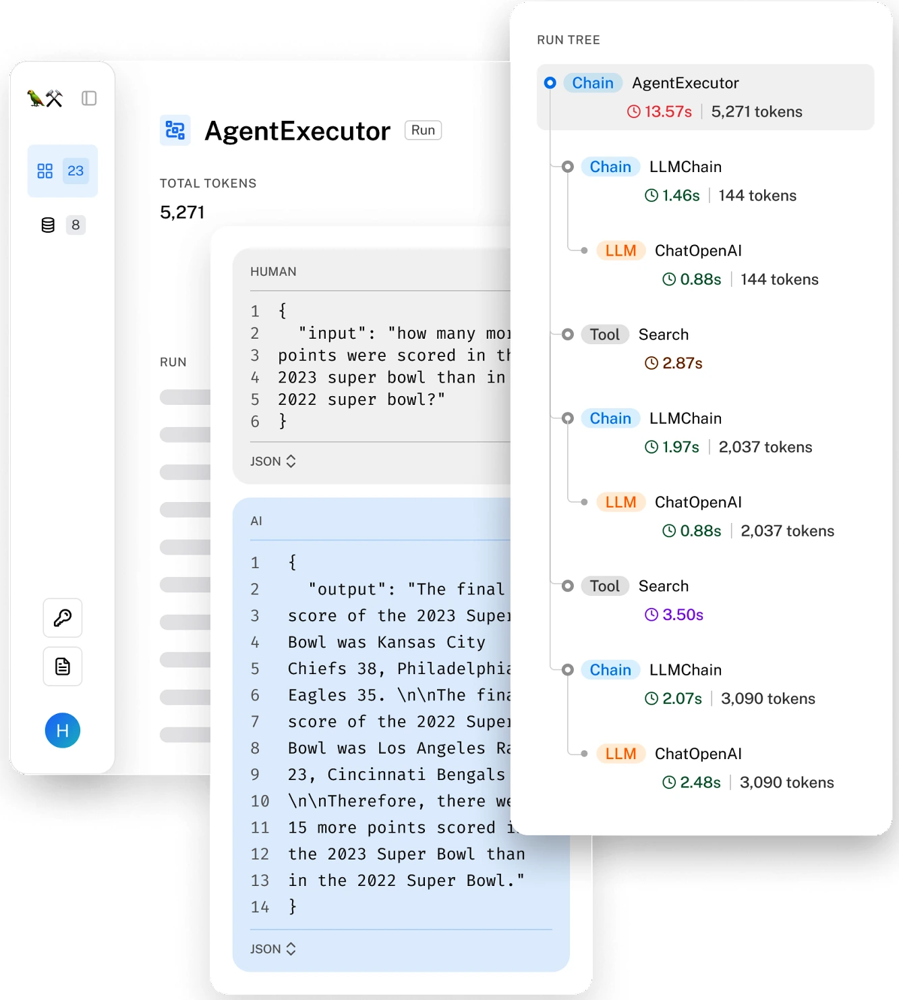
漂移检测
Drift Detection
系统组件越多，可能变化的东西越多。AI 应用中包括：
- 系统提示变化
- 系统提示可能在你不知情时改变，原因很多：它建立在提示模板上，而模板被更新；同事发现拼写错误并修正。简单逻辑就足以发现系统提示何时变化。
- 用户行为变化
- 用户会随时间适应技术。人们已经学会怎样组织 Google 查询取得更好结果，或怎样让文章在搜索结果中排名更高。生活在自动驾驶汽车区域的人甚至学会怎样“欺负”自动驾驶汽车，让它们让路（Liu 等，2020）。 用户也很可能改变行为，从你的应用取得更好结果。例如学会写指令让回答更简洁，导致回答长度逐渐下降。只看指标可能看不出原因，需要调查根因。
- 底层模型变化
- 通过 API 使用模型时，API 可能不变，底层模型却更新。第 4 章提到，提供商不一定公开更新，只能由你检测。相同 API 的不同版本可能显著影响表现。Chen 等（2023）观察到 GPT-4、GPT-3.5 的 2023 年 3 月版和 6 月版在基准分数上差异明显；Voiceflow 从旧 GPT-3.5-turbo-0301 切换到新 GPT-3.5-turbo-1106 后，也报告表现下降 10%。
AI 流水线编排
AI Pipeline Orchestration
AI 应用可能非常复杂：包含多个模型，从多个数据库检索数据，并能访问大量工具。编排器帮助规定这些组件怎样协同，形成端到端流水线，并确保数据在组件间顺畅流动。
高层来看，编排分两步：
- 组件定义
- 告诉编排器系统使用哪些组件，包括不同模型、用于检索的外部数据源，以及可用工具。模型网关能让添加模型更容易；也可告诉编排器评测、监控使用什么工具。
- 链接（Chaining）
- 链接本质上是函数组合，把不同函数——组件——组合起来。在链接或流水线化中，要告诉编排器系统从收到用户查询到完成任务会执行哪些步骤。
一个步骤示例：
- 处理原始查询；
- 根据处理后的查询检索相关数据；
- 把原始查询与检索数据组合成模型预期格式的提示；
- 模型根据提示生成回答；
- 评估回答；
- 回答好就返回用户，否则把查询路由给人工操作员。
编排器负责在组件间传递数据，应该提供工具确保当前步骤输出符合下一步骤预期格式。理想情况下，组件失败或数据不匹配导致数据流中断时，它应通知你。
AI 流水线编排器不同于 Airflow、Metaflow 等通用工作流编排器。
为延迟要求严格的应用设计流水线时，尽量并行处理。例如路由组件——决定把查询送到哪里——和 PII 移除组件可以同时运行。
AI 编排工具很多，包括 LangChain、LlamaIndex、Flowise、Langflow 和 Haystack。检索、工具使用都是常见应用模式，所以许多 RAG 和智能体框架也是编排工具。
项目开始时很容易想直接使用编排器，但可以先尝试不用它构建应用。任何外部工具都会增加复杂度；编排器可能抽象掉系统工作方式的关键细节，让系统更难理解、调试。
进入应用开发后期后，也许会发现编排器确实能让工作更轻松。评估编排器时要考虑三个方面：
- 集成与可扩展性
- 评估它是否支持当前组件以及未来可能采用的组件。例如想用 Llama，就检查是否支持。模型、数据库、框架数量太多，任何编排器都不可能全部支持，所以还要考虑扩展性：缺少某个组件时，修改支持有多难？
- 复杂流水线支持
- 应用变复杂后，可能要管理含多步骤与条件逻辑的精细流水线。支持分支、并行处理、错误处理等高级功能的编排器，可以高效管理复杂性。
- 易用性、表现和可扩展能力
- 考虑用户友好程度。直观 API、完整文档和强大社区支持能显著降低团队学习曲线。避免会发起隐藏 API 调用或增加应用延迟的编排器；同时确保应用数量、开发者和流量增长时，编排器能有效扩展。
用户反馈
User Feedback
用户反馈一直以两种关键方式在软件应用中发挥核心作用：评估应用表现，以及指导开发。对 AI 应用，用户反馈更重要。它是专有数据，而数据是竞争优势。要建立第 8 章介绍的数据飞轮，必须有设计良好的用户反馈系统。
用户反馈既可把模型个性化给单个用户，也可训练未来模型版本。数据越来越稀缺，专有数据比以往更有价值。产品若能快速上线、尽早吸引用户，就能收集数据持续改进模型，使竞争对手难以追赶。
必须记住：用户反馈就是用户数据。利用反馈需要像利用任何数据一样谨慎，尊重用户隐私；用户有权知道自己的数据怎样被使用。
提取对话反馈
Extracting Conversational Feedback
传统上，反馈分显式和隐式。显式反馈是用户响应应用明确请求而提供的信息，例如赞／踩、顶／踩、星级评分，或回答“我们解决了你的问题吗？”的“是／否”。显式反馈在各应用中相当标准——询问一个人是否喜欢某物的方式就那么多——因此理解得更充分。
隐式反馈是从用户动作推断的信息。例如用户购买了推荐商品，说明推荐不错。什么动作算隐式反馈取决于每个应用允许用户做什么，因此高度依赖应用。基础模型创造了全新应用世界，也创造了许多新型隐式反馈。
许多 AI 应用采用对话界面，让用户更容易给反馈。用户可以像日常对话一样鼓励好行为、纠正错误；他们指挥 AI 时所用的语言，既能表达对应用表现的反馈，也能表达偏好。
例如使用 AI 助手规划澳大利亚旅行，请它找三晚悉尼酒店，它给出：
以下是悉尼三晚住宿的三个建议：
- Historic Rocks Boutique Hotel（The Rocks）
约 400 美元／晚；街道迷人，靠近标志性景点。 - Stylish Surry Hills House Hotel（Surry Hills）
约 200 美元／晚；时尚街区，有热闹咖啡馆和艺术画廊。 - Chill Bondi Beachside Hotel（Bondi Beach）
约 300 美元／晚；海滨位置，适合放松和探索城市。
你怎样回应会揭示偏好。“好的，帮我订靠近画廊的那家”说明你对艺术感兴趣；“没有 200 美元以下的吗？”则暴露价格敏感，也说明助手还不够了解你。
从对话提取的反馈可用于：
- 评测：推导指标，监控应用；
- 开发：训练未来模型，或指导模型开发；
- 个性化：为每位用户定制应用。
隐式对话反馈既可从用户消息内容推断，也可从沟通模式推断。反馈混在日常对话里，因此也很难提取。对话线索的直觉能帮助提出初始信号，但必须做严格数据分析和用户研究，才能真正理解。
对话机器人流行以后，对话反馈获得更多关注；但在 ChatGPT 出现前，它已是活跃研究领域。2010 年代末以来，强化学习社区一直尝试让 RL 算法学习自然语言反馈，许多结果很有希望，见 Fu 等（2019）、Goyal 等（2019）、Zhou 与 Small（2020）、Sumers 等（2020）。
Amazon Alexa（Ponnusamy 等，2019；Park 等，2020）、Spotify 语音控制（Xiao 等，2021）、Yahoo! Voice（Hashimoto 与 Sassano，2018）等早期对话 AI 应用，也高度关注自然语言反馈。
自然语言反馈
Natural Language Feedback
从消息内容提取的反馈叫自然语言反馈。下面几种信号能说明对话进行得怎样，适合在生产环境追踪以监控应用表现。
提前终止
Early Termination
用户提前结束回答——例如生成到一半就停止、退出网页或移动应用、让语音助手停下，或干脆不再回复智能体让他选择的选项——很可能说明对话进展不顺。
错误纠正
Error Correction
如果用户后续消息以“不，……”或“我的意思是……”开头，模型回答很可能偏离目标。
为纠正错误，用户可能改写请求。图 10-12 展示用户试图纠正模型误解。改写尝试可以用启发式规则或 ML 模型发现。
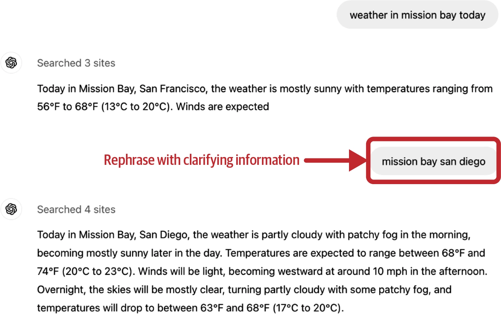
用户也会指出模型具体该怎样改。例如让模型概括故事，模型混淆角色，用户可能反馈：“Bill 是嫌疑人，不是受害者。”模型应该根据反馈修改摘要。
这种纠正动作的反馈在智能体用例尤其常见，用户可能把智能体推向更合适动作。例如让智能体分析 XYZ 公司市场，用户会说：“也应该检查 XYZ 的 GitHub 页面”或“看看 CEO 的 X 主页”。
有时用户要求明确确认，让模型自行纠正，例如“你确定吗？”“再检查一次”“给我看来源”。这不一定说明答案错了，却可能说明细节不足，也可能反映用户总体不信任模型。
有些应用允许用户直接编辑模型回答。例如让模型生成代码，用户修改了代码，就是被编辑部分不太正确的强信号。
用户编辑也是宝贵偏好数据。偏好数据通常采用“查询—胜出回答—落败回答”格式，可用于让模型与人类偏好对齐。每次编辑都构成一条偏好样本：原回答是落败回答，编辑后回答是胜出回答。
抱怨
Complaints
用户经常只抱怨应用输出，不尝试纠正。例如说答案错误、不相关、有害、太长、缺乏细节，或者就是很差。表 10-1 展示 FITS（Feedback for Interactive Talk & Search）数据集自动聚类得到的 8 组自然语言反馈（Xu 等，2022）。
| 组 | 反馈类型 | 数量 | 比例 |
|---|---|---|---|
| 1 | 再次澄清自己的需求。 | 3,702 | 26.5% |
| 2 | 抱怨机器人没有回答问题、给出无关信息，或要求用户自己寻找答案。 | 2,260 | 16.2% |
| 3 | 指出能够回答问题的具体搜索结果。 | 2,255 | 16.2% |
| 4 | 建议机器人应使用搜索结果。 | 2,130 | 15.3% |
| 5 | 指出答案事实错误，或没有以搜索结果为依据。 | 1,572 | 11.3% |
| 6 | 指出机器人回答不具体、不准确、不完整或不够详细。 | 1,309 | 9.4% |
| 7 | 指出机器人对答案没有信心，总以“我不确定”或“我不知道”开头。 | 582 | 4.2% |
| 8 | 抱怨机器人回答重复或粗鲁。 | 137 | 1.0% |
表 10-1 FITS 数据集自动聚类得到的反馈类型（Xu 等，2022；结果据 Shi 等，2023）。
理解机器人怎样辜负用户，对改进至关重要。如果用户不喜欢啰嗦回答，就修改提示让机器人更简洁；如果不满源于细节不足，就提示它更具体。
情感
Sentiment
抱怨也可能只是表达负面情绪——挫败、失望、嘲讽等——却不解释原因，例如“Uggh”。这听起来有点反乌托邦，但分析用户与机器人对话中的情感变化，可能揭示机器人表现。一些呼叫中心全程追踪用户声音；用户音量越来越大，说明出问题了。反过来，用户愤怒开始、愉快结束，说明对话可能解决了问题。
自然语言反馈也能从模型回答推断，一个重要信号是拒答率。如果模型常说“抱歉，我不知道”或“作为语言模型，我不能……”，用户可能不满意。
其他对话反馈
Other Conversational Feedback
其他类型的对话反馈来自用户动作，而不是消息。
重新生成
Regeneration
许多应用允许用户重新生成回答，有时可换模型。选择重新生成，可能因为不满意第一个回答，也可能因为第一个已经够好，只是想比较选项；图像或故事生成等创意请求尤其如此。
按用量计费的应用中，重新生成信号可能比订阅制更强，因为用户不太会仅出于好奇额外花钱。作者本人则常对复杂请求重新生成，以确认模型回答是否一致；若两个回答互相矛盾，两个都无法信任。
重新生成以后，有些应用会明确要求比较新旧回答，如图 10-13。这类“更好／更差”数据同样可以用于偏好微调。
对话组织
Conversation Organization
用户整理对话的动作——删除、重命名、分享、收藏——也可以作为信号。删除对话是对话很差的强信号，除非内容令人尴尬、用户只是想消除痕迹。重命名说明对话本身不错，但自动生成标题不好。
对话长度
Conversation Length
每段对话的轮数也是常见信号。它是正是负取决于应用。AI 陪伴应用中，长对话可能说明用户喜欢；客服等生产力聊天机器人中，长对话却可能说明机器人解决问题效率低。
对话多样性
Dialogue Diversity
对话长度还可结合多样性解读，多样性可用不同词元数或主题数衡量。如果对话很长，但机器人一直重复几句话，用户可能困在循环里。
显式反馈更容易解释，却要求用户额外付出。很多用户不愿做这项工作，所以显式反馈可能稀疏，用户量小的应用尤其如此。显式反馈还受响应偏差影响，例如不满意用户更可能抱怨，使反馈看起来比实际更负面。
隐式反馈更丰富——什么算反馈只受想象力限制——但噪声更大，也更难解释。例如分享对话既可能是负面也可能是正面。作者的一位朋友主要分享模型的明显错误，另一位则主要把有用对话分享给同事。必须研究用户，理解每个动作背后的原因。
加入更多信号有助于澄清意图。例如用户分享链接后又改写问题，可能说明对话没有达到预期。从对话中提取、解释、利用隐式反馈，是规模还小但正在增长的研究领域。
反馈设计
Feedback Design
如果你之前不确定该收集什么反馈，希望上一节已经给了你一些思路。本节讨论何时以及如何收集这些宝贵的反馈。
何时收集反馈
When to Collect Feedback
在用户旅程的各个阶段都可以、也应该收集反馈。每当需要出现时，用户都应当有办法提供反馈，尤其是报告错误。不过，反馈入口不应造成干扰，更不应打断用户的工作流。以下几个时机的用户反馈可能特别有价值。
开始使用时
In the Beginning
用户刚注册时，其反馈可以帮助应用为该用户完成校准。例如，人脸识别应用要先扫描你的脸才能工作；语音助手可能要求你朗读一句话，以识别你说出的唤醒词（即激活语音助手的词语，例如“Hey Google”）；语言学习应用则可能通过几个问题判断你的水平。
对人脸识别等应用而言，校准是必需的；但对其他应用，初始反馈应该是可选项，因为它会增加用户试用产品的摩擦。如果用户没有说明偏好，可以先采用中性选项，再随使用过程逐步校准。
发生糟糕情况时
When Something Bad Happens
当模型给出幻觉回答、拦截了合法请求、生成了有损用户利益的图像，或响应时间过长时，用户应该能够把这些失败告知你。可以让用户点踩回答、用同一个模型重新生成，或切换到另一个模型。用户也可能直接用对话反馈，例如“你错了”“太老套了”或“我想要短一点的”。
理想情况下，即使产品出错，用户仍应能够完成任务。例如模型把商品归错类时，应允许用户编辑类别。先让用户与 AI 协作；如果仍解决不了，就让他们与人协作。许多客服机器人在对话拖得太久或用户显得沮丧时，会提出转接人工客服。
图像生成中的局部重绘（inpainting）就是人机协作的一个例子。如果生成图像不完全符合需要，用户可以选中图像中的一个区域，再用提示词描述应如何改进。图 10-14 展示了 DALL-E 的局部重绘示例（OpenAI，2021）。这一功能既能让用户得到更好的结果，也能为开发者提供高质量反馈。
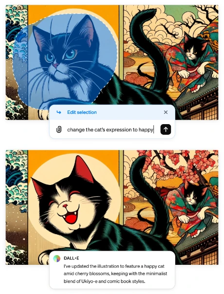
模型置信度较低时
When the Model Has Low Confidence
当模型对某项操作不确定时，可以向用户请求反馈来提高置信度。例如，面对“总结一篇论文”的请求，如果模型不确定用户想要简短的高层总结，还是按章节展开的详细总结，那么在生成两个总结不会增加用户等待时间的前提下，它可以把两个版本并排显示，由用户选择偏好的版本。这类比较信号可以用于偏好微调。图 10-15 展示了生产环境中的比较评估示例。
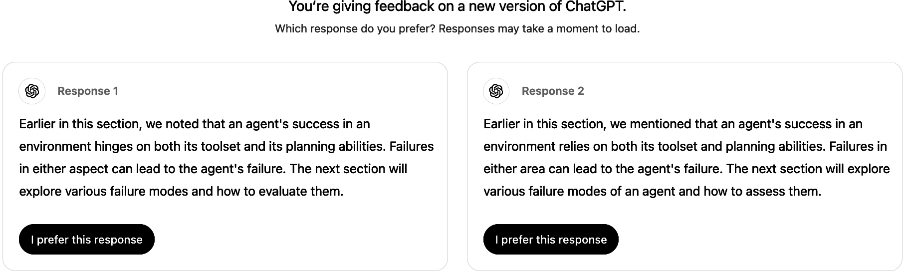
同时展示两个完整回答让用户选择，意味着在索取显式反馈。用户可能没时间读完两份回答，也可能不够在意，无法认真反馈，因此投票可能带有很大噪声。有些应用（例如 Google Gemini）只显示每个回答的开头，如图 10-16 所示；用户点击展开想继续阅读的回答。目前尚不清楚，并排展示完整回答还是部分回答能获得更可靠的反馈。
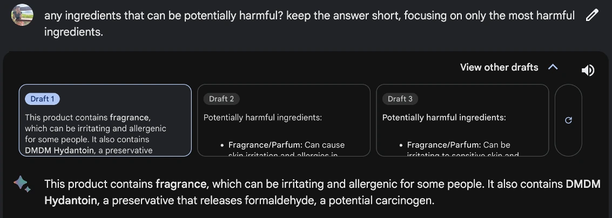
另一个例子是自动给照片加标签的照片整理应用，因此它能回答“显示所有 X 的照片”之类的查询。如果不确定两个人是否是同一个人，应用可以像图 10-17 中的 Google Photos 一样向用户询问。
你可能会问：事情进展顺利时的反馈呢？用户可以通过点赞、收藏或分享来表达满意。不过，Apple 的人机界面指南不建议同时索取正面和负面反馈。应用本就应该默认产生好结果；专门询问用户对好结果的反馈，可能让用户觉得好结果只是例外。归根结底，用户如果满意，就会继续使用你的应用。
不过，作者交谈过的许多人认为，当用户遇到惊艳结果时，应该让他们有表达反馈的选项。一位负责热门 AI 产品的产品经理提到，其团队需要正面反馈，因为它能揭示哪些功能受用户喜爱到了愿意热情反馈的程度。这样，团队就能集中精力打磨少数影响大的功能，而不是把资源分散到许多新增价值很小的功能上。
有些产品担心询问正面反馈会让界面杂乱或惹恼用户，因而避免这样做。但这个风险可以通过限制请求频率来控制。例如，如果用户群很大，每次只向 1% 的用户显示反馈请求，既可能收集足够的反馈，又不会打扰绝大多数人的体验。要注意，被询问用户的比例越小，反馈偏差的风险越大；不过，只要样本池足够大，这些反馈仍能带来有意义的产品洞察。
如何收集反馈
How to Collect Feedback
反馈机制应该无缝融入用户工作流。用户不必额外费力就能提供反馈；反馈收集既不应打断体验，也应当很容易被忽略。同时，还应给用户提供认真反馈的动力。
图像生成应用 Midjourney 经常被视为反馈设计的优秀案例。对每条提示词，Midjourney 会生成一组（四张）图像，并像图 10-18 那样给用户三个选项：
- 生成其中任意一张图像的放大版本。
- 生成其中任意一张图像的变体。
- 重新生成。
这些选项会向 Midjourney 提供不同信号。选项 1 和选项 2 都告诉 Midjourney：四张图中哪一张最有希望。选项 1 对所选图像给出最强的正面信号，选项 2 给出较弱的正面信号；选项 3 则意味着所有图像都不够好。不过，即使现有图像不错，用户也可能只是为了看看还有什么可能性而选择重新生成。
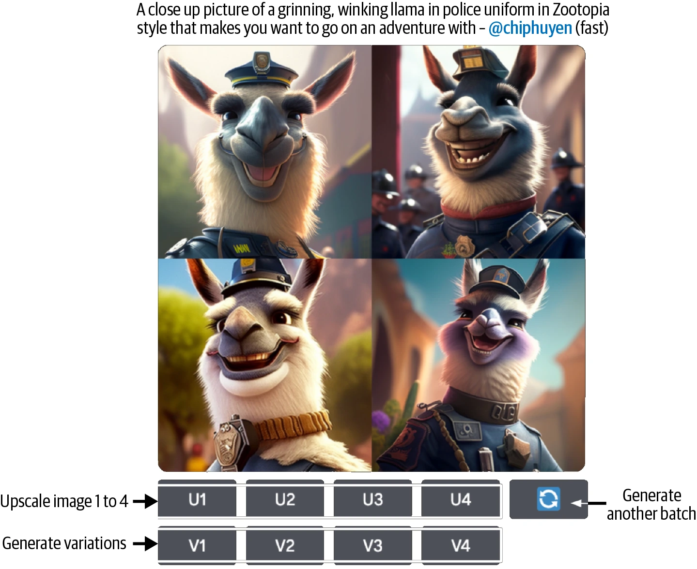
GitHub Copilot 等代码助手可能用比最终文本更浅的颜色展示草稿，如图 10-19 所示。用户可以按 Tab 键接受建议，也可以继续输入而忽略建议；两种操作都会产生反馈。
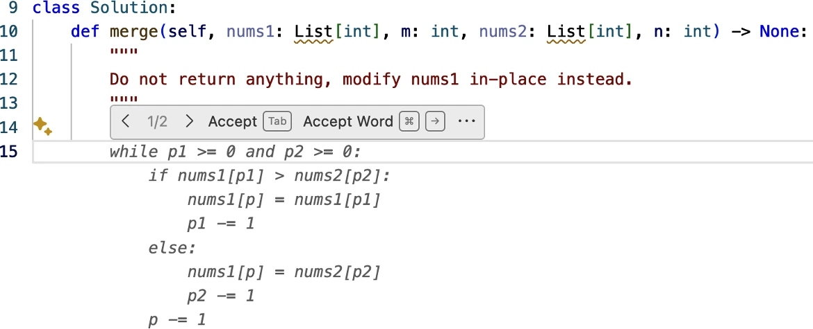
ChatGPT 和 Claude 这类独立 AI 应用面临的一项重大挑战，是它们并未集成进用户的日常工作流，因此难以像 GitHub Copilot 等集成式产品那样收集高质量反馈。例如 Gmail 推荐一份邮件草稿后，可以跟踪草稿如何被采用或编辑；而如果你用 ChatGPT 写邮件，ChatGPT 并不知道生成的邮件最终是否真的发出。
单独的反馈本身可能足以支持产品分析。例如，仅凭点赞和点踩信息，就能计算用户对产品满意或不满意的频率。但若要进行更深入的分析，还需要反馈发生时的上下文，例如此前 5～10 轮对话。这些上下文有助于判断哪里出了问题。不过，如果上下文可能包含个人身份信息，那么没有用户明确同意，可能就不能获取这些内容。
因此，一些产品会在服务协议中加入条款，允许它们为了分析和产品改进而访问用户数据。对于没有这类条款的应用，用户反馈可以绑定到一个“用户数据捐赠”流程：在给出反馈时，询问用户是否愿意一并捐赠（即分享）最近的交互数据。例如，提交反馈时，可以让用户勾选一个复选框，同意分享最近的数据作为这次反馈的上下文。
向用户说明反馈会如何使用，可以促使他们提供更多、更好的反馈。你会用某位用户的反馈为此人做产品个性化、统计整体使用情况，还是训练新模型？如果用户担忧隐私，可以向他们保证数据不会用于训练模型，或不会离开设备——但只有事实确实如此时才能这样保证。
不要要求用户做不可能的事。例如，收集比较信号时，不要让用户在两个自己根本看不懂的选项之间作选择。作者曾遇到 ChatGPT 要她在一道统计学问题的两个答案中选一个，如图 10-20 所示，令她不知如何作答。她希望当时能有一个“我不知道”的选项。
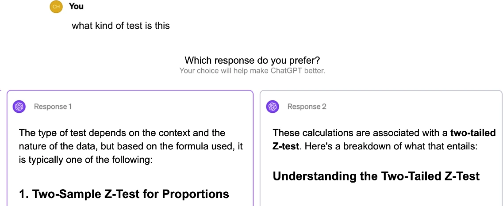
如果图标和工具提示能帮助用户理解选项，就把它们加上；同时应避免让人困惑的设计。含糊的说明会产生带噪声的反馈。作者曾举办一场 GPU 优化研讨会，并用 Luma 收集反馈。阅读负面反馈时，她很困惑：文字评价明明是正面的，星级却都是 1/5。深入检查后她才发现，Luma 在反馈表单里用表情符号表示数字，却把代表一星的愤怒表情放在了五星本应出现的位置，如图 10-21 所示。
还要慎重决定用户反馈应当公开还是私密。例如，用户喜欢某项内容时，你是否希望其他用户也看到这条信息？Midjourney 早期的反馈——某人选择放大图像、生成变体或再生成一批图像——都是公开的。
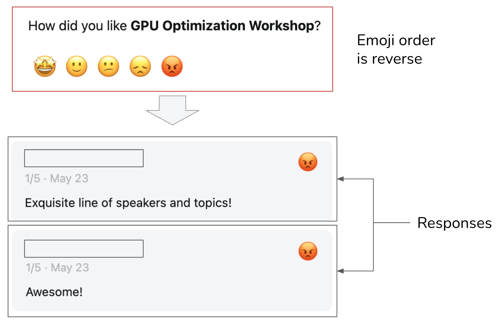
信号是否可见，会深刻影响用户行为、用户体验和反馈质量。用户在私下往往更坦率，因为其活动被评判的可能性更低，从而可能产生质量更高的信号。2024 年，X（原 Twitter）把“点赞”设为私密。X 的所有者 Elon Musk 声称，这项改动之后点赞数量显著上升。
但私密信号会降低可发现性和可解释性。例如，隐藏点赞后，用户无法再找出联系人点过赞的推文。如果 X 根据你所关注用户的点赞来推荐推文，那么隐藏点赞可能让人不明白为何自己的信息流里会出现某些推文。
反馈的局限
Feedback Limitations
用户反馈对应用开发者的价值毋庸置疑，但反馈并非免费的午餐，它也有自身的局限。
偏差
Biases
和其他数据一样，用户反馈中也存在偏差。理解这些偏差，并据此设计反馈系统十分重要。每个应用都有自己的偏差。下面列举几种反馈偏差，帮助你了解应该警惕什么。
宽容偏差
Leniency Bias
宽容偏差是指人们给出的评分比实际应得的更正面，通常是因为他们觉得应该友善、想避免冲突，或者正面评价只是最省事的选项。设想你正在赶时间，一个应用要求你为某次交易评分。你对交易并不满意，却知道一旦给出负面评分，就会被要求解释原因，于是为了尽快结束而选择正面评价。这也是不应该让用户为提供反馈额外劳动的原因。
在五星评分中，四星和五星通常都表示体验良好。然而在许多场景里，用户可能觉得自己有压力，必须给五星，而只有出了问题时才给四星。据 Uber 称，2015 年司机的平均评分是 4.8，低于 4.6 的司机则面临账号停用风险。
这种偏差未必会让评分系统失效。Uber 的目标是区分好司机和差司机；即使存在宽容偏差，其评分系统似乎仍能帮助实现这一目标。要发现这种偏差，必须查看用户评分的整体分布。
如果想获得粒度更细的反馈，可以消除低评分所带有的强烈负面含义，帮助用户摆脱这种偏差。例如，不要只显示一到五的数字，而可以向用户展示以下选项：
- “旅程很棒，司机也很棒。”
- “相当不错。”
- “没什么可抱怨的，但也没有特别出彩之处。”
- “本来可以更好。”
- “不要再给我匹配这位司机。”
随机性
Randomness
用户经常随机给出反馈，这通常并非恶意，而是缺乏认真输入的动力。例如，在比较评估中并排显示两个很长的回答时，用户可能不想把两份都读完，只是随便点一个。在 Midjourney 的场景中，用户也可能随机选择一张图来生成变体。
位置偏差
Position Bias
选项呈现给用户的位置会影响用户对它的看法。一般来说，用户点击第一条建议的概率高于第二条。因此，用户点击第一条并不必然说明它确实是好建议。设计反馈系统时，可以随机改变建议的位置来缓解这种偏差，也可以建立模型，根据建议所处的位置计算它真实的成功率。
偏好偏差
Preference Bias
还有许多偏差会影响一个人的反馈，本书已经讨论过其中一些。例如，并排比较时，即使长回答不够准确，人们也可能偏爱它，因为长度比错误更容易察觉。另一种偏差是近因偏差：比较两个答案时，人们倾向于偏爱最后看到的那个答案。
检查用户反馈、找出其中的偏差十分重要。理解这些偏差，才能正确解释反馈，避免做出受到误导的产品决策。
退化反馈循环
Degenerate Feedback Loop
请记住，用户反馈是不完整的：你只能得到用户对你展示给他们的内容所作的反馈。
在利用用户反馈改变模型行为的系统中，可能出现退化反馈循环。当预测结果本身影响反馈，而反馈又影响下一轮模型时，就会形成退化反馈循环，并不断放大初始偏差。
设想你正在构建一个视频推荐系统。排名越高的视频出现得越靠前，因此获得更多点击，这又强化了系统“它们是最佳选择”的判断。起初，视频 A 和视频 B 的差异可能很小；但因为 A 的排名稍高，它得到更多点击，系统便继续提升它。久而久之，A 的排名一飞冲天，B 则被远远抛在后面。这个反馈循环使热门视频持续热门，新视频很难脱颖而出。这个问题也被称为“曝光偏差”“流行度偏差”或“过滤气泡”，并且已经得到广泛研究。
退化反馈循环还会改变产品的重点和用户群。设想最初有少数用户反馈说他们喜欢猫的照片，系统捕捉到这一点后开始生成更多猫图；这些图吸引来爱猫用户，他们进一步反馈猫图很好，促使系统生成更多猫。没过多久，应用就成了猫咪天堂。这里用猫图举例，但同一种机制也会放大种族主义、性别歧视以及对露骨内容的偏好等其他偏差。
根据用户反馈采取行动，甚至可能让对话代理变成一个——实在找不到更好的词——“说谎者”。多项研究表明，使用用户反馈训练模型，会教模型给出它认为用户想要的东西，即使那并不是最准确或最有益的答案（Stray，2023）。Sharma 等人（2023）表明，依据人类反馈训练的 AI 模型倾向于阿谀奉承，更可能给出迎合用户观点的回答。
用户反馈对于改善用户体验至关重要，但如果不加分辨地使用，它可能延续偏差，甚至毁掉产品。在把反馈纳入产品之前，务必理解这些反馈的局限及其潜在影响。
总结
Summary
如果说此前每一章都聚焦于 AI 工程的某个具体方面，那么本章则从整体上审视了在基础模型之上构建应用的过程。
本章分为两部分。第一部分讨论 AI 应用的一种常见架构。虽然每个应用的具体架构可能不同，但这套高层架构为理解不同组件如何组合在一起提供了一个框架。作者通过逐步搭建架构的方式，讨论每一步面临的挑战，以及可以用来应对这些挑战的技术。
为了保持系统模块化和可维护，拆分组件是必要的，但这种拆分并非固定不变。不同组件的功能可以通过许多方式相互重叠。例如，护栏既可以实现在推理服务中，也可以放在模型网关内，还可以成为独立组件。每增加一个组件，都可能让系统能力更强、更安全或更快，但也会提高系统复杂度，并带来新的失败模式。
监控与可观测性是任何复杂系统都不可或缺的一部分。可观测性意味着理解系统如何失败，围绕这些失败设计指标与告警，并确保系统的设计使失败能够被检测和追踪。软件工程和传统机器学习中的许多可观测性最佳实践与工具同样适用于 AI 工程应用，但基础模型会引入新的失败模式，因此还需要额外的指标和设计考量。
与此同时，对话式界面带来了新的用户反馈形式，可用于分析、产品改进和数据飞轮。本章第二部分讨论了多种对话反馈，以及如何设计应用以有效收集它们。
传统上，用户反馈设计被视为产品职责，而不是工程职责，因此工程师经常忽略它。但用户反馈是持续改进 AI 模型的关键数据来源，如今越来越多 AI 工程师参与这一过程，以确保能够获得所需数据。这再次印证了第 1 章的观点：与传统机器学习工程相比，AI 工程正在更靠近产品。这既是因为数据飞轮的重要性不断提高，也是因为产品体验正在成为竞争优势。
许多 AI 挑战从根本上说都是系统问题。要解决它们，往往必须后退一步，从整体上考虑系统。同一个问题可以由不同组件各自独立解决，也可能需要多个组件协作才能形成解决方案。只有透彻理解系统，才能解决真实问题、解锁新的可能性并确保安全。
尾注
Endnotes
- 一个例子是，三星的一名员工把三星的专有信息输入 ChatGPT，意外泄露了公司的机密。
- 用户也有可能要求模型返回一个空回答。
- 几位早期读者告诉作者，为降低延迟而忽略护栏的想法让他们做噩梦。
- 截至写作时，几家最大的可观测性公司（Datadog、Splunk、Dynatrace、New Relic）的总市值接近 1,000 亿美元。
- 作者的《Designing Machine Learning Systems》（O’Reilly，2022）也有一章讨论监控。该章的早期草稿以“Data Distribution Shifts and Monitoring”为题发布在作者博客上。
- 因此，一些编排工具也想成为网关。事实上，似乎有太多工具都想成为包办一切的端到端平台。
- 发布开源应用而非商业应用的一项关键缺点，是收集用户反馈要困难得多。用户可以拿走开源应用并自行部署，而你完全不知道应用如何被使用。
- 不仅可以收集对 AI 应用的反馈，还可以用 AI 来分析反馈。
- 作者希望文本转语音也能拥有局部重绘式功能。她发现文本转语音在 95% 的时候都表现良好，但剩下 5% 可能令人沮丧：AI 可能读错名字，也可能在对话中没有正确停顿。她希望应用能让用户只编辑错误之处，而不必重新生成整段音频。
- 作者在演讲活动中提出这个问题时，得到的回答存在分歧。一些人认为，完整回答给用户提供了更多决策信息，因此得到的反馈更可靠；另一些人则认为，一旦用户已经读完完整回答，就没有动力再点击更好的那一个。
- 参见 Nelson 与 Everett 于 2017 年 9 月在 POLITICO 发表的“Ted Cruz Blames Staffer for ‘Liking’ Porn Tweet”，以及 Liam Niemeyer 于 2023 年 3 月在 WKU Public Radio 发表的“Kentucky Senator Whose Twitter Account ‘Liked’ Obscene Tweets Says He Was Hacked”。
- 此处建议的选项只用于展示如何改写选项，尚未经过验证。
后记
Epilogue
这是一段文字。
你做到了！你刚刚读完了一本拥有 15 万多字、160 幅插图、250 条脚注和 975 个参考链接的技术书。
能够留出时间学习是一种幸运。作者感谢自己有机会写这本书并学习新事物，也感谢你选择把宝贵的学习时间投入这本书。
技术写作中最困难的部分，不是找到正确答案，而是提出正确的问题。写作本书激励作者提出了许多问题，这些问题引导她获得了有趣而实用的发现。她希望这本书也为你激发了一些有意思的问题。
基础模型之上已经构建出许多令人惊叹的应用，毫无疑问，这一数量未来将呈指数级增长。更系统的 AI 工程方法——例如本书所介绍的方法——将使开发过程更容易，从而催生更多应用。如果你有任何想讨论的使用场景，请随时联系作者。她很乐意听到有趣的问题和解决方案。可以通过 X 上的 @chipro、LinkedIn 上的 /in/chiphuyen，或作者网站的沟通页面联系她： huyenchip.com/communication。
如需更多 AI 工程资源，请查看本书的 GitHub 仓库： github.com/chiphuyen/aie-book。
AI 工程面临许多挑战。它们并非全都有趣，但每一个都是成长并创造影响的机会。作者迫不及待想了解你将构建什么！